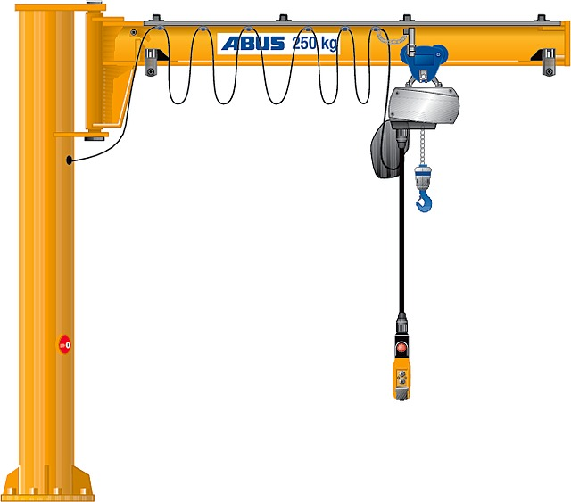

Konsoles celtnis
Konsoles celtnis ir celtņa veids, kura celtspējas mehānisms atrodas uz ratiņiem, kas pārvietojas pa konsoli – pa garu metāla profila šķērsgriezuma siju, kas ir piestiprināta pie balsta staba vai sienas telpā. Gar šo balsteni pārvietojas celtspējīgs elektriskās vai rokas piedziņas mehānisms (vinča vai telferis). Šis celtņu paveids var strādāt gan atklātā laukumā, gan slēgtās noliktavu, rūpnīcu vai ražošanas telpās. Dotais celtņa tips ir ļoti ērts, izmantojot teritorijās ar ierobežotu platību.
Pēc konsoles pagriezienu tipa konsoles celtnis var būt 2 veidu – elektriskais un rokas. Elektriskajā variantā pagrieziena mehānisms ir aprīkots ar elektropiedziņu. Rokas variantā konsole griežas, izmantojot rokas vinču.
